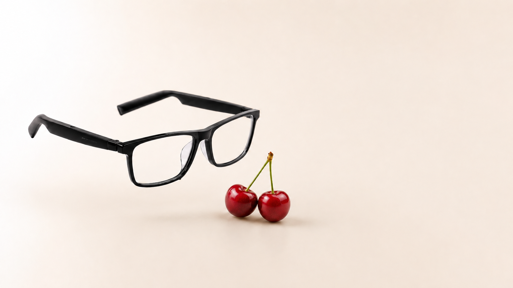
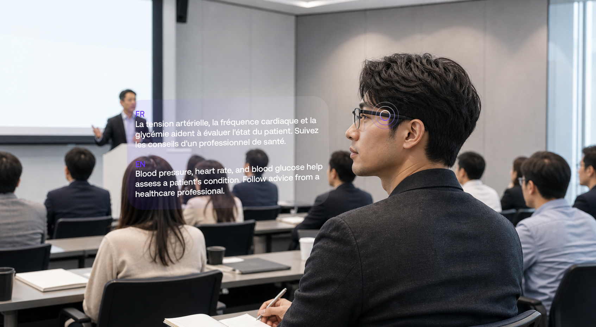
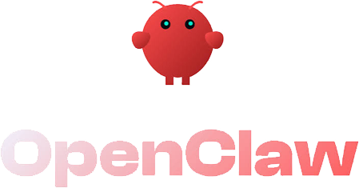
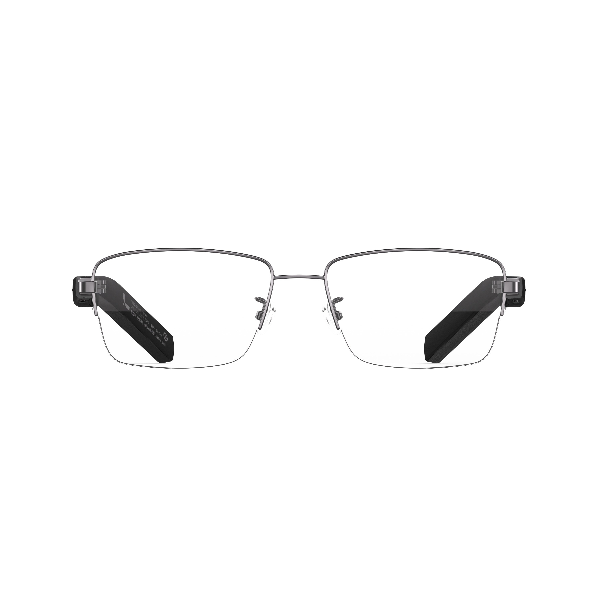

Light Enough for Everyday Wear
The glasses weigh as much as two cherries.
27.6gframe weight
Optical-Level Lightweight Design
*Fit and comfort may vary by wearer. In-store fitting is recommended when possible.
AI Notes
Capture audio, transcribe the conversation, and generate structured summaries so you can stay focused on the people in front of you.
After a conversation, review original text, translated content, and key takeaways in one clean mobile interface.
Sync records across devices and continue organizing notes on desktop, making follow-up work easier after meetings and travel.
translation
Support 128 languages and face-to-face conversations.

Support one-way listening translation for lectures, courses, and meetings.
Support translation search, review, and organization.
AI Assistant


Open audio
Open stereo while keeping you aware of your surroundings and your audio private. Noise-canceling microphones keep calls clear.
Listening
Immersive stereo audio delivers rich bass and crisp highs for an unmatched listening experience.
Calls
Advanced noise-canceling technology ensures your calls are crystal clear, even in noisy environments.
Efficient Work, Stylish Life